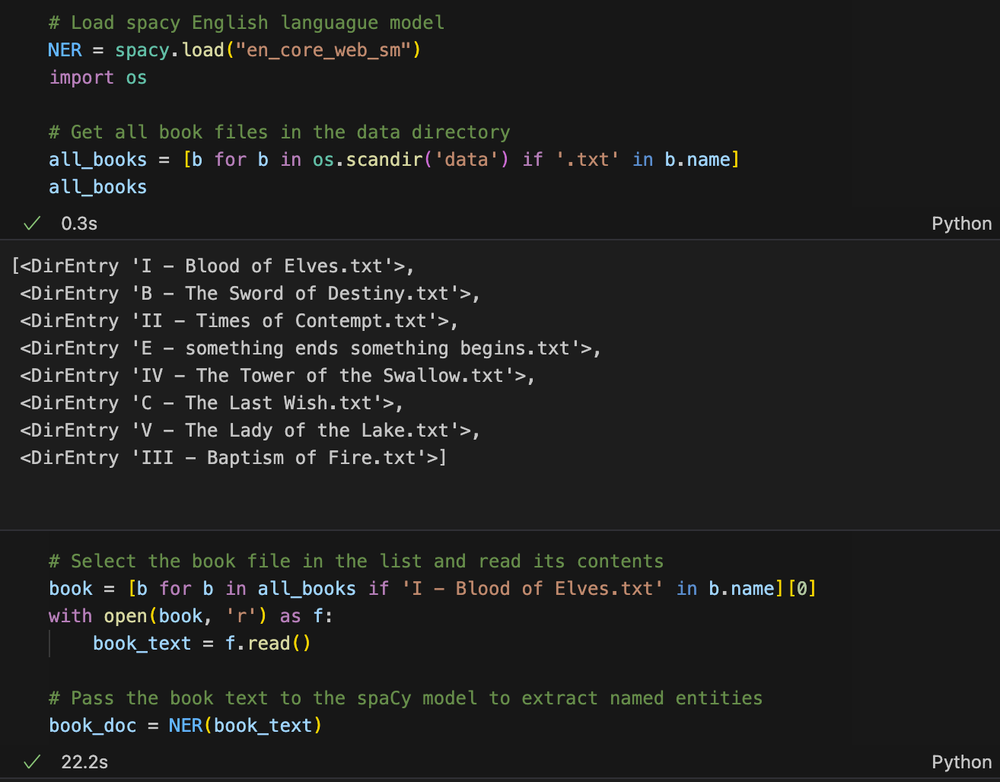
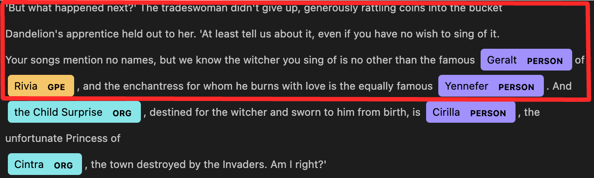
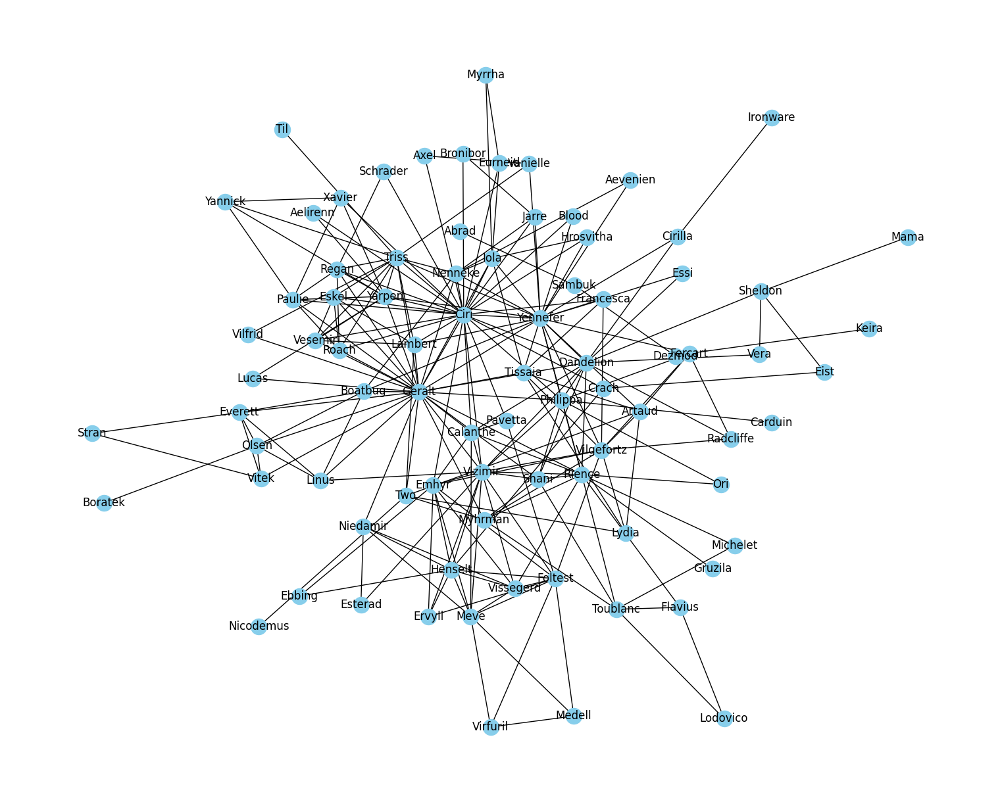

The world of "The Witcher", crafted by Andrzej Sapkowski, is an epic fantasy series that has made waves in the realms of literature, gaming, and entertainment alike. This series, with its rich narrative and complex characters, has been the foundation for several adaptations, including video games and a Netflix original series. In particular, the latest season, "The Witcher 2," has sparked a renewed interest and enthusiasm in audiences worldwide. After immersing myself in the second season of this gripping series, I was compelled to delve deeper into its intricacies, leading to the inception of this research project.
Objectives:
This research aims to provide a comprehensive exploration of "The Witcher 2," focusing primarily on the series' key characters and communities. By analyzing these elements, I seek to enhance our understanding of the series' narrative structure and its portrayal of a multifaceted universe. The objectives of this research are:
Planning:
This Witcher fandom has compiled a comprehensive list of all characters in the series. I will employ Selenium to scrape this data, extracting character names and their corresponding books.
I have located a valuable resource on GitHub, which includes text files of all books in the Witcher series. My next step will involve importing these files for further processing. I plan to utilize Named Entity Recognition(NER) (a natural language processing (NLP) method that extracts information from text) for identifying and classifying the named entities of all characters present within these texts.
The Netflix series, The Witcher 2, draws its plot from The Blood of Elves Novel. Therefore, I will focus our examination of character's named entities on this particular book.
Now we come to an important part. I will extract the character entities from each sentence within a window of five sentences. This method involves moving a "box" over the text to find and establish connections between characters. As illustrated in the images below, we have established one relationship between Geralt and Yennefer as depicted in the first image. In the second image, we have created three relationships, intricately connecting Geralt, Yennefer, and Cirilla.
After removing duplicates and sorting the characters alphabetically, we will then establish relationships between adjacent characters.
Utilizing the NetworkX library in Python, I have plotted the relationships between the characters to visually represent their connections.
After incorporating node "size" and centrality measures, I used the Pyvis library to create interactive plots, further enhancing the visualization of character relationships.
In conclusion, our research delves into the intricate and intriguing universe of The Witcher 2 series, identifying and analyzing its most critical characters and communities. Employing a mix of qualitative analysis and data visualization using Pyvis, we have discerned that Geralt, Ciri, and Yennefer are the most pivotal characters in the series.
These characters are not only central to the narrative but also play vital roles in molding the various communities within this universe. By visualizing the relationships among characters, we have obtained a deeper understanding of the complex interconnections and alliances that underpin this richly woven world. Moreover, our analysis has yielded valuable insights into the dynamics and complexities of the diverse communities in The Witcher 2 series, underscoring the significance of these key characters in the larger narrative context.
The entire script and further explaination for this article can be found at my Deepnote and Github page.